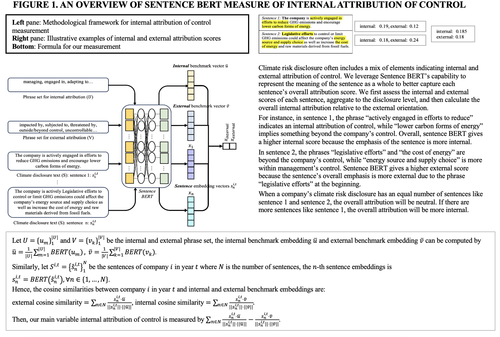

It’s (Not) Our Problem: How Management’s Construction of Climate Risk Affects ESG Ratings
Abstract: How do voluntary climate-related disclosures affect third-party ESG ratings? Adopting a social constructivist perspective, we propose that corporate disclosures reveal the extent to which management considers climate risks as inside or outside its control. Building on climate change discourse literature and locus of control theory, we theorize that emphasizing physical risks reveals an external locus of control and leads outside evaluators to rate firms as having fewer environmental strengths, whereas emphasizing energy risks indicates an internal locus of control, resulting in higher environmental strength ratings. Using a novel dataset on climate risk disclosures and employing recent machine-learning techniques, we find support for our predictions: firms with a greater portion of physical risk receive significantly lower environmental ratings, whereas firms with a greater emphasis on energy risk receive significantly higher environmental ratings. We also explore boundary conditions regarding uncontrollable events and potential rewards for addressing climate risks, as well as the effects of disclosure uncertainty. This research enriches our understanding of climate-related disclosures by showing how they provide narrative cues as to a firm’s agentic stance, which influences ESG analysts’ meaning making and ratings.

Crowdfunding “Postcard”: The Role of Visual Congruence and Verbal Distinctiveness
Abstract: Entrepreneurial narratives play a critical role in mobilizing resources, especially for social ventures engaging impact-driven audiences. While increased attention has been paid to entrepreneurial stories shared through online platforms, existing literature has largely overlooked the audience’s sequential engagement with these stories and their multimodal composition. Building upon the concept of optimal distinctiveness and theories on communication modes, we theorize how the distinctiveness of visual and textual elements differ in appealing to the audience. Furthermore, we theorize the relative impact of an initial miniature story—the succinct entrepreneurial story usually leveraging visuals along with verbal text to communicate the essence of an entrepreneurial endeavor—compared to a subsequent fuller story. Analyzing borrowing campaigns pitched on Kiva over 16 years, both mini-pitches (in the form of image-text pairs) and fuller descriptions, we find that visual category congruence and verbal category distinctiveness are positively related to funding success, but only verbal category distinctiveness leads to faster funding. Moreover, we find that mini pitches have a greater impact on accelerating the funding process than fuller stories. Our findings caution against assuming that audiences equally engage in each fuller entrepreneurial story and assuming visual and verbal modes of entrepreneurial narratives have similar impacts on audience support.